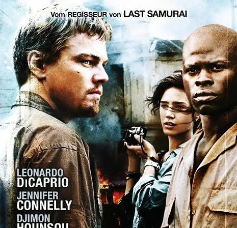

Blutdiamanten in Sierra Leone · institutionelle Berichte, UN-Dokumente, Menschenrechtsquellen, Gerichtsunterlagen und wissenschaftliche Fachliteratur
Sascha Rottler
Hier stehen die Belege hinter Handout, Präsentation und Präsentationsleitfaden. Der Spielfilm dient als Einstieg und Vergleichsgegenstand, nicht als historische Belegquelle. Die folgenden Karten erklären auf Deutsch, wofür jede Quelle verwendet wurde; englischsprachige Originale sind als solche gekennzeichnet.
Filmischer Ausgangspunkt und Referenz
Filmreferenz2006
Blood Diamond – Filminformationen
Regie: Edward Zwick · Filmjahr: 2006

Bilddatei vom Auftraggeber bereitgestellt. Eine ursprüngliche Bildquelle wurde nicht mitgeliefert.
Der Spielfilm gab den Anstoß zur Themenwahl. Die historischen Aussagen der Präsentation werden anhand der unten aufgeführten Berichte und Dokumente geprüft.
Wofür verwendet? Als filmischer Ausgangspunkt und Gegenstand des Faktenchecks, nicht als Geschichtsquelle.
Abschlussbericht der Wahrheits- und Versöhnungskommission
Wahrheits- und Versöhnungskommission Sierra Leones
Zentrale institutionelle Quelle für Ursachen des Bürgerkriegs, politische Verantwortung, Menschenrechtsverletzungen, Diamantenwirtschaft und Aufarbeitung.
Wofür verwendet? Als Grundlage für Kriegsursachen, Menschenrechtsverletzungen, Diamantenwirtschaft und Aufarbeitung.
Wahrheits- und Versöhnungskommission Sierra Leones
Besonders wichtig für die Aussage, dass Diamanten nicht die alleinige Ursache des Krieges waren, den Konflikt aber finanzierten und verlängerten; außerdem RUF, AFRC, CDF, Zwangsarbeit und Schmuggel.
Wofür verwendet? Für die Einordnung von Kriegsursachen, bewaffneten Gruppen, Zwangsarbeit und Schmuggel.
Offizielle Grundlage für die Sanktionen gegen nicht zertifizierte Rohdiamanten aus Sierra Leone und für die internationale Reaktion auf die Kriegsfinanzierung durch Diamanten.
Wofür verwendet? Als offizieller Beleg für die internationalen Maßnahmen gegen Konfliktdiamanten aus Sierra Leone.
Kimberley-Prozess: Grunddokument des Zertifizierungssystems
Kimberley-Prozess
Offizielles Regelwerk des internationalen Zertifizierungssystems für Rohdiamanten; wichtig für Funktionsweise, Definition und Ziel des Kimberley-Prozesses.
Wofür verwendet? Für Ziele, Regeln und Funktionsweise des Zertifizierungssystems für Rohdiamanten.
Global Witness: Diamanten, Sierra Leone und Charles Taylor
Global Witness (Nichtregierungsorganisation)
Hintergrundpapier mit direktem Bezug zu Sierra Leone, Charles Taylor, RUF, Diamantenhandel und Kriegsfinanzierung; gut für den späteren Film-Faktencheck und die internationale Dimension.
Wofür verwendet? Für den Zusammenhang zwischen Diamantenhandel, Kriegsfinanzierung und Charles Taylor.
Die Quellenübersicht ordnet die bereits ausgewählten Belege ein. Einzelne Quellen können beim abschließenden Film-Faktencheck später noch präziser einem konkreten Prüfpunkt zugeordnet werden.